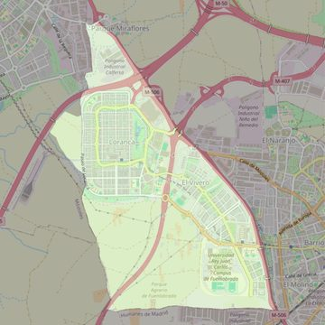

Sagrada Familia
- Arciprestazgo
- Fuenlabrada
- Población
- Fuenlabrada
- Dirección postal
- Pza. de las Letras, s/n
- Código postal
- 28942
- Extensión
- 7,30 km² (730 ha)
- Teléfono
- 911 299 747
- Correo electrónico
- sagradafamilia-fuenlabrada@diocesisgetafe.es
- Información demográfica
- De la parroquia · De la población (Fuenlabrada) · Del arciprestazgo (Fuenlabrada)


Descargar mapaLímites según decreto
“Partiendo de la confluencia de la autovía A-506 (de Móstoles a Pinto) con la carretera M-407, arrancan por el eje de la autovía A-506 (en dirección noroeste) hasta el término municipal de Móstoles; continúan por los límites de los términos municipales de Fuenlabrada y Móstoles (en dirección sur); por los límites de los términos municipales de Fuenlabrada y Moraleja de En Medio (en dirección sur); por los límites de los términos municipales de Fuenlabrada y Humanes de Madrid (en dirección este) y por el eje de la autovía A-506 (en dirección noroeste) hasta la confluencia con la M-407, punto de partida”. (Boletín Oficial, Junio-2000, pág. 553-554)